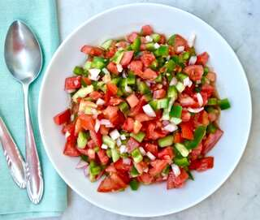

Spanish Salad Recipe

Spanish salad is a fresh summer recipes with tomatoes and cucumber.
List of ingredients :
- 2 large tomatoes
- large cucumber
- 1 medium onion
- 1 large green pepper
- 2 cloves garlic minced
- A pinch of cumin
- ½ teaspoon salt
- 3 tablespoons extra virgin olive oil
- 2 tablespoon red wine vinegar
Steps to make your own salad
- Chop the onion in small cubes and soak in water.
- Chop the tomatoes, cucumber and pepper and place in a bowl.
- Drain the onions and add them to the rest of the vegetables.
- Place the garlic in a mortar with a pinch of cumin and a pinch of salt and a few drops of olive oil until you have a paste. In another small bowl mix the rest of the olive oil, vinegar and salt, add the garlic paste and mix well.
- Add the dressing to the salad and mix well. Cover and refrigerate.
- Serve chilled with bread or rusks.